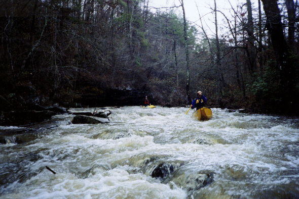
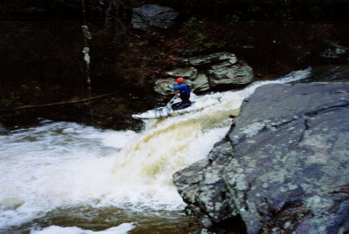
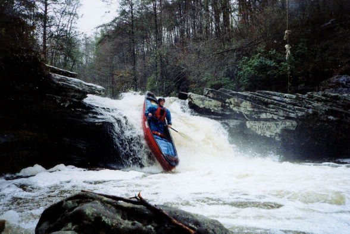
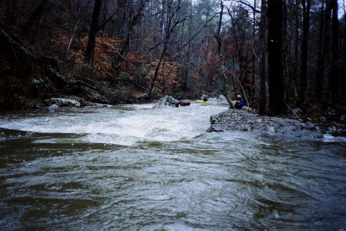
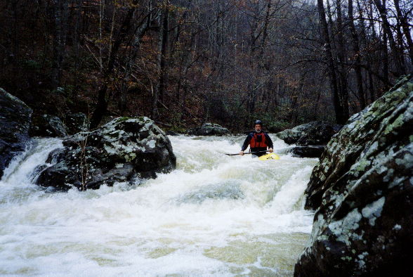
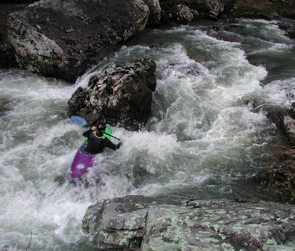
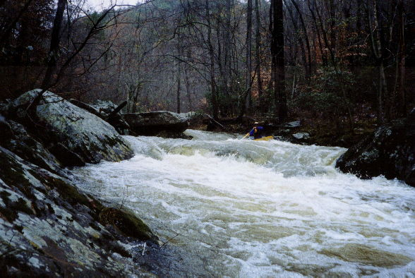
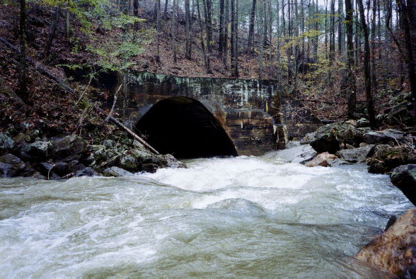
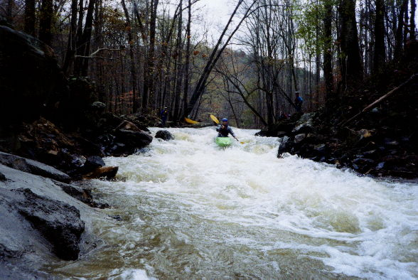

|  | Dave Branham and Gary Holder on a typical rapid upstream of the falls. |
|  | Mark D' tries for speed on the falls. This hole could be very sticky at higher levels. |
|  | Dave Curry rides the curler to the preferred landing zone. |
|  | Downstream of the last bridge, the gradient picks up a bit. |
|  | Gary Holder lines up for the main drop on the Enema Within. That dark looking rock at the bottom briefly stopped Lee's momentum in his RPM. Everybody else slid over or around it. |
|  | An above view of the Enema. Lance Finley tried to boof off the big rock under water in the center of the rapid. He sorta got spun around. He finished upright. (Tony Diliberto photo) |
|  | Dave B. on a double drop. |
|  | The tunnel under the railroad and the rapid just upstream. |
|  | The tunnel rapid. This also knocked Lee Foster's nose. This would be really cool at high water. After this, there is nothing but flatwater. |